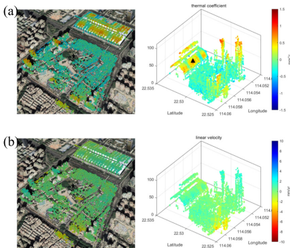
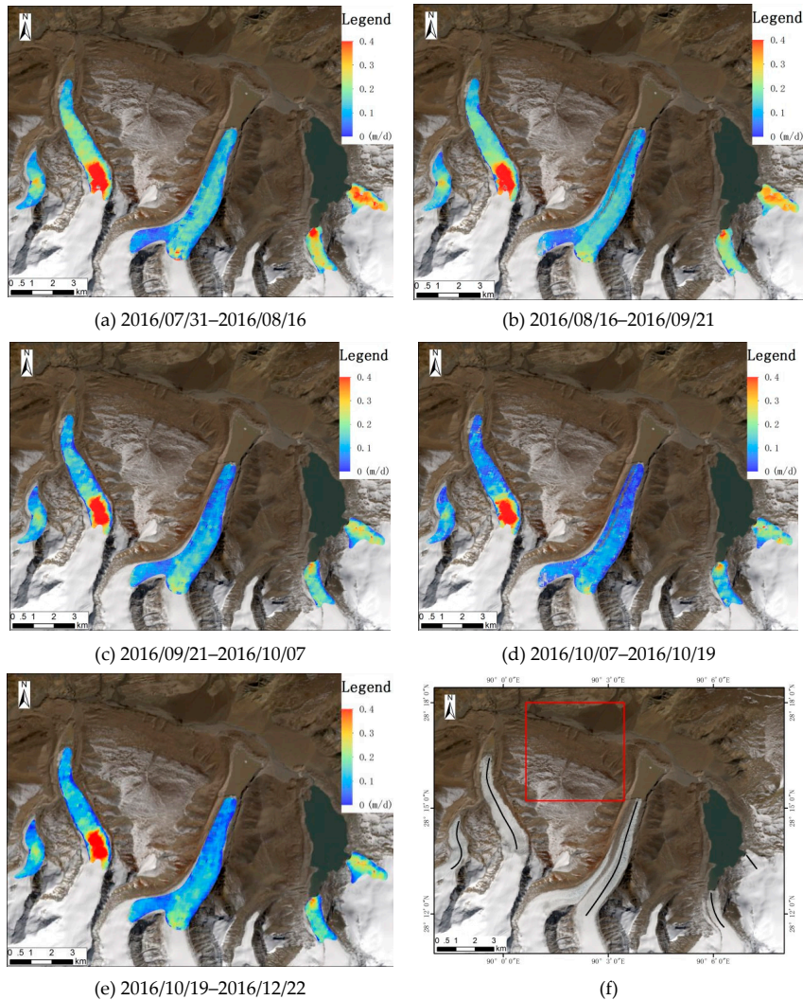

Week9 SAR
9.1 Summary
This week’s lecture focused on SAR
1. What is SAR
Synthetic Aperture Radar (SAR) is an active sensor. Compared to optical imagery, which relies on spectral characteristics, SAR imagery is based on backscatter. Short-wavelength sensors provide higher spatial resolution images but have weaker penetration capabilities. Long-wavelength sensors produce lower resolution images but can penetrate vegetation or thin surface layers.
2. Radar Incidence Direction & Polarization
Radar incidence direction and polarization are two different concepts. SAR acquires ground information from a side-looking angle, which helps avoid strong backscatter interference and provides terrain and target structure details. Sentinel-1 operates on both ascending and descending orbits. Imaging from different angles leads to different radar backscatter characteristics for buildings, so images from different orbits need to be analyzed separately. Polarization refers to the direction in which the electromagnetic wave vibrates.
3. Scattering Mechanism
The brightness of a SAR image depends on the scattering mechanism of the surface; different surface types scatter radar waves in different ways. By using various polarizations, different types of ground information can be obtained.
| Scattering Type | Surface Occurrence | Image Brightness | Polarization Characteristic |
|---|---|---|---|
| Surface Scattering | Water, smooth ground | Very dark (black) | Low backscatter |
| Volume Scattering | Forests, vegetation | Moderate (brighter) | VH polarization is obvious |
| Double-Bounce Scattering | Urban buildings, vertical structures | Very bright | VV polarization is obvious |
4. Information Contained in SAR
SAR data contains two main types of information: amplitude and phase. Amplitude indicates the strength of the returned radar signal, while phase records the wave peaks and troughs of the returned electromagnetic signal.
5. InSAR
InSAR is a method that uses phase information to measure small ground changes. It can detect ground displacements on the centimeter scale. For example, if the ground level changes (such as subsidence due to an earthquake), the phase of the backscattered signal will change slightly. By comparing the phase difference between two images, the direction and magnitude of ground movement can be measured. InSAR can also be used to generate digital elevation models, providing high-precision maps of the ground or buildings.
Methods for detecting abnormal changes:
- Mean Analysis: Calculate the average backscatter intensity before and after the change; significant differences can be considered abnormal changes.
- Variance Analysis: Calculate the standard deviation before and after the change; if the new mean exceeds the range of the standard deviation, it is considered an abnormal change.
9.2 Application
SAR can record both phase and intensity information to study the deformation of objects, and is commonly used to monitor object movement. Urban and natural environments have different characteristics, so other methods and data are needed to supplement SAR’s limitations in research.
In complex urban environments with dense buildings, SAR images can suffer from geometric distortions, making object segmentation difficult. Chisheng Wang and others introduced an object-oriented MT-InSAR (Obj-InSAR) framework, combining SAR images and 3D point clouds to generate 4D deformation point cloud data. The “4D” refers to 3D in space and 1D in deformation. The research steps include Object Segmentation, Parameter Estimation, Fine Alignment & Geopositioning, and Generation of InSAR 4D Point Cloud. First, orthophotos are generated from 3D point clouds in the geographic coordinate system, then target segmentation is performed using the Segment Anything Model (SAM). By using a 3D lookup table to relate 3D coordinates and SAR pixels, each 3D geographic coordinate (X, Y, Z) can correspond to a SAR image pixel (r, a). This method overcomes the issue of losing facade information in complex urban environments caused by the original 2D lookup table, achieving precise target matching. Permanent Scatterers (PS) are selected to construct a hybrid network (Delaunay + fully connected network) for parameter estimation. Time series analysis is performed to remove errors and extract nonlinear deformation information, ultimately generating an accurate 4D deformation point cloud.


In natural environments, such as measuring glacier movement, SAR images are prone to decorrelation due to atmospheric interference. In such cases, DInSAR, which relies on phase information, is not suitable. Instead, Offset Tracking, based on image intensity information, can be used. Offset Tracking selects two matching windows from two images, computes the similarity between them using Normalized Cross-Correlation, and finds the best matching point to obtain the displacement field of the object. Fan, Jinghui, and others compared the accuracy differences between the offset tracking technique based on SAR and point cloud calculation based on Terrestrial Laser Scanners. The study shows that the offset tracking technique depends on image quality and is more reliable when extracting large-scale glacier velocity fields.

9.3 Reflection
In my previous studies, I had some understanding of SAR, but it was limited to its operational principles. This week’s learning introduced me to the ability of SAR sensors to extract phase information and the value of InSAR in detecting displacement. This made me think about how this technology could be applied to urban village redevelopment in China. Urban village redevelopment is a major urban renewal strategy, involving the demolition and reconstruction or renovation of villages within built-up urban areas. A key challenge in planning redevelopment is accurately measuring the floor area of existing buildings. Currently, this is often done through manual surveys, which are costly in terms of both labor and resources. Through this week’s learning, I began to consider whether SAR data could be used for preliminary area estimation.
Furthermore, I believe SAR could also be useful for monitoring illegal building extensions. Since compensation amounts are often tied to building area, some individuals engage in unauthorized construction. Existing monitoring methods mainly rely on detecting changes in surface materials, such as identifying whether bare land has been covered with concrete. To evade detection, many illegal extensions maintain the original rooftop material, making them difficult to identify using conventional methods. However, if InSAR techniques were used to analyze time-series images and detect height changes in buildings, it might offer a more effective way to monitor such illegal construction activities. Urban management departments could potentially develop models based on this approach to enhance urban governance.
9.4 References
Wang, C. et al. (2024) A New Object-Oriented SAR Interferometry Framework for Monitoring Urban Deformation. IEEE transactions on geoscience and remote sensing. [Online] 621–11.
Fan, J. et al. (2019) Monitoring and Analyzing Mountain Glacier Surface Movement Using SAR Data and a Terrestrial Laser Scanner: A Case Study of the Himalayas North Slope Glacier Area. Remote sensing (Basel, Switzerland). [Online] 11 (6), 625-.